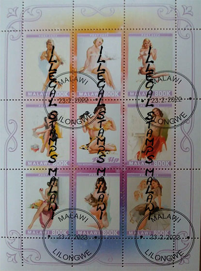
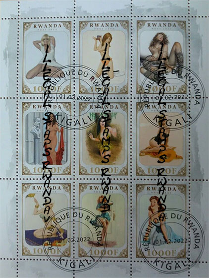
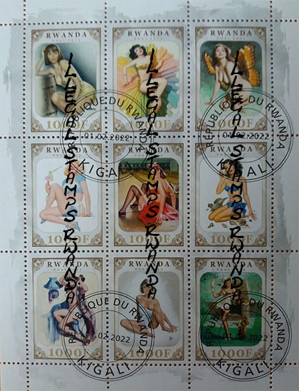
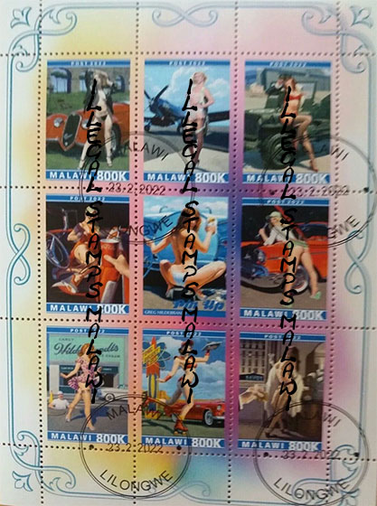
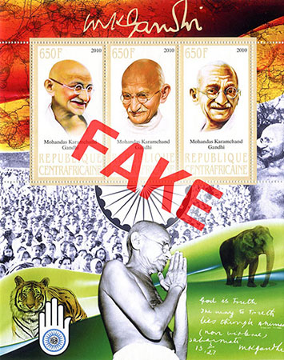
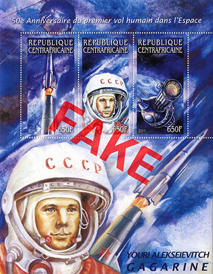
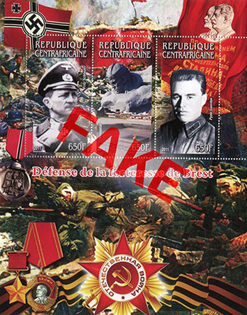

The Collapse of the WNS
A USELESS DATABASE
Victor Manta
Philatelic journalist, PWO (*)
In the last few months, I noticed that the UPU has restarted updating the WNS database with new issues of postage stamps from all over the world. This action is taking place very slowly and in no case keeps pace with the activity of issuing new postage stamps by the multiple member countries participating in the WNS. It still represents a change compared to the updating policies of the last time and it makes us believe that the UPU hasn't decided to stop the updating of WNS.
Considering the practical lack of using WNS for its initial and main purpose, namely to present all legal postal stamps, and indirectly to fight against the proliferation of illegal stamps, this new policy of continuing to update WNS is not special news, but is worth mentioning.
On the other hand, for over two years no UPU circulars have been issued denouncing illegal stamps, which is particularly regrettable. We urge the UPU to urgently resume issuing such circulars to cover as best as possible everything that appears on the world philatelic market. We mention on this occasion our recent page that lists some illegal stamps that appeared in the first quarter of 2023.
The WNS (**) was launched on 1 January 2002, with the primary aim of compiling a database of all postage stamps legally issued, from that date onwards, by the issuing postal authorities of UPU member countries and territories that have signed up to the WNS. The WNS therefore serves as a primary reference tool for checking postage stamp issues, helping to safeguard the philatelic industry against illegal issues. The WNS is a register of all official postage stamps issued by its members. It is the only system that provides collectors with a guarantee that a given stamp is official (excerpts).
(**) WNS - WADP Numbering System. WADP - World Association for the Development of Philately, led by the UPU - Universal Postal Union.Source UPU, like: https://www.upu.int/en/Universal-Postal-Union/Activities/Philately-IRCs/WADP-Numbering-System-(WNS)
101 995 postage stamps were registered as of October 2022 by its 195 members. The total cost of their registration and publishing is about five million Swiss Francs (even more if counted in Euro or US$).

Consulting the UPU website, we found that in the year 2021 Algeria registered with the WNS 4 stamps, Slovenia: 6, Ukraine: 3. That is all that was registered worldwide by the UPU in 2021. No stamps were registered in 2022.
General source: https://www.wnsstamps.post/en/Statistics

We have also found that for the years 2021 and 2022 no IB UPU Circulars that denounce illegal stamps have been issued so far.

On Oct. 19, 2022, we sent an email to members of the philatelic group of the International Bureau (IB) of the UPU and asked for information about the current state of the WNS and of the UPU Circulars that concern the illegals stamps issues. Our message was not answered so far but we will of course update this page if the situation changes. The message sent to the main responsible for philately at the UPU, Ms. Olfa Mokaddem, by using an email address that worked for at least the last five years, was returned by the Mail Delivery Subsystem with the error “550 #5.1.0 Address rejected.” The whole is very strange and disturbing. Meanwhile we learned that she left the UPU without this being announced.

Considering all the things stated above, we can only conclude that WNS has stopped being updated. We cannot imagine that such a complex system, in which an average of 5,000 stamps were registered and published annually between 2002 and 2021 on the WNS site, can survive a two-years crash both organizationally and financially. But we were wrong, because the updates of the WNS restarted.

Anyway, the 5 million Swiss francs that were invested in it by almost 200 postal administrations in the world were spent in vain, this because WNS did not achieve the purpose for which it was created, the significant reduction in the number of illegal stamps. The number of illegal stamps on the world market has not decreased since the creation of WNS, which is illustrated by a short extract of some mess issued in time, as presented on this page.

UPU simultaneously stopped the publication of the Circulars denouncing the illegals stamps, but even if the number of these Circulars decreased considerably in the last five years, it is still a blow to the worldwide stamp collecting. It is otherwise useless to accuse the countries concerned of not reporting to the UPU the illegal stamps issued in their name. They are usually poor countries that do not have the material and personnel means to do it, and by illegal stamps not only these countries are hit, but their unsuspecting buyers too, which ultimately means the entire philatelic world (Note 2).

Note 1. The idea of creating a database of all stamps issued to fight against illegal ones is as absurd as creating a database of all non-sex offenders in order to fight against sex offenders. It is known that in the case of sex offenders, the solution of creating and spreading a searchable database of sex offenders was the chosen one by some rational authorities. Just for your information, in the USA the searchable national sex offender public website is at https://www.nsopw.gov/ . Something similar, like a database of illegal stamps, would be useful for the searching of illegal stamps as opposed to the expensive, totally useless, and failed WNS.
Note 2. The lack of UPU Circulars is actually the reason why the images published on this page can only be considered as presenting potentially illegal stamps. Unfortunately, our past experience shows that it is useless to ask the philatelic group of the UPU about the legitimacy of some stamps, even if they invite us to do so on their website. A typical answer sent to us by the UPU after our inquiry was that the UPU asked about it the concerned postal administration, but since it did not answer, it can be considered that the respective stamp is legitimate. Love it or leave it!
Note 3. The sheets marked FAKE are taken over from the Stamperija site. For this mass issuer of excessive stamp issues the illegal stamp issuers represent a competition they obviously dislike. But, as so often, the enemy of our enemies is not our friend.
(*) PWO is the short for the Philatelic Webmaster Organization, whose website can be found at https://pwmo.org
Legal notice
• This is a piece of philatelic journalism. It is protected by the free speech and by the liberty of the press doctrines.
• Some short excerpts or images are sometimes used for illustration/teaching/criticism/commentary purposes only, to properly inform the worldwide readers.
• The fair use doctrine is strictly observed. Each excerpt is properly attributed and respects the rights of the copyright owners.
• We will immediately correct any piece of information that will be proved false.
|